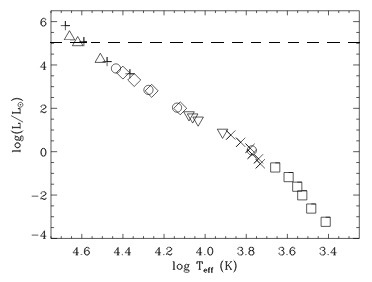
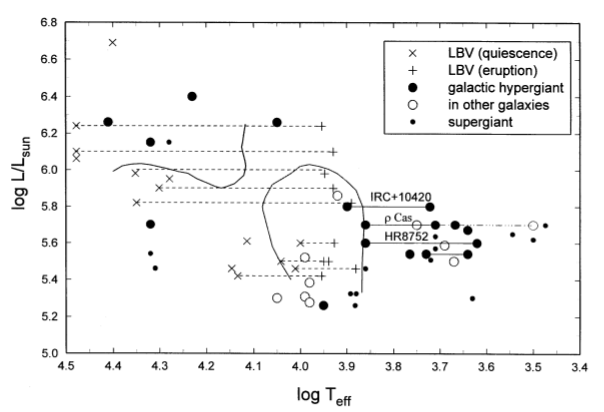
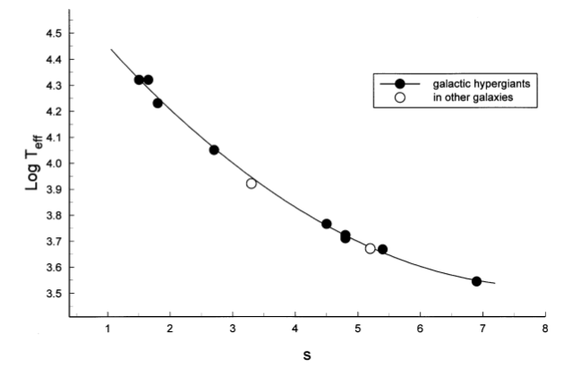
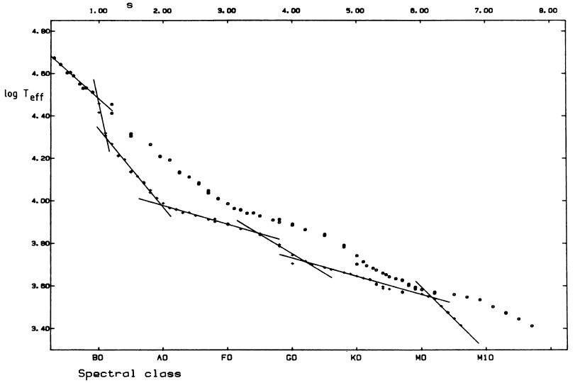
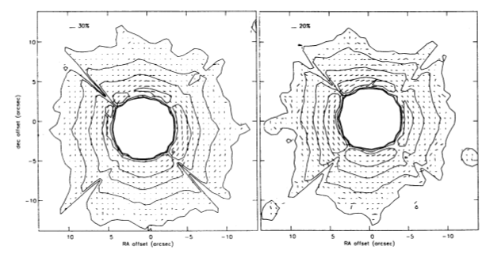
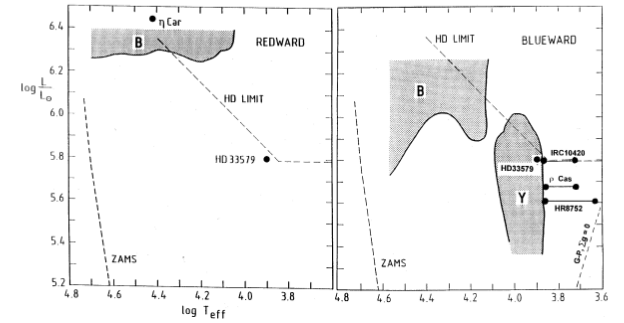
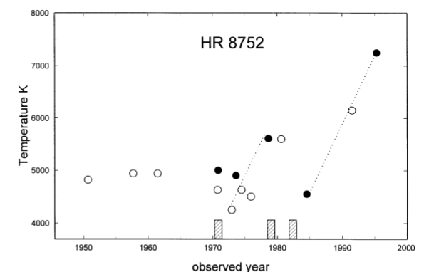

Las Hipergigantes Amarillas
Comenzaremos dando una definición de la clase de luminosidad hipergigante. En un principio, Feast y Thackeray, en 1956, definen un criterio para estrellas "super-supergigantes", que eran aquellas con MV menor a -7. Luego, se cambió el nombre a hipergigantes, y en 1971 Keenan propone clasificar así a las supergigantes con uno o más componentes de emisión de Hα. Esto indica una atmósfera extendida ó una gran tasa de pérdida de masa, ya que la zona de formación de líneas estaría alejada de la zona de formación del espectro contínuo. Por otra parte Smolinski agrega que las hipergigantes son aquellas que tienen líneas de absorción más anchas que las de las estrellas Ia ó similares. Si bien las líneas anchas indican mayor densidad, y ocurre en estrellas más bien chicas ó en secuencia principal, en este caso se debe a que la zona de formación de líneas se ve atravesada por un campo de velocidades, lo que ensancha dichas líneas. De esta manera, queda definido el criterio Keenan-Smolinski, el cual tiene un fundamento físico; la clasificación de hipergigantes se basa en el estudio del espectro y no solamente en su luminosidad.
Luego, hay una clara distinción física entre las estrellas supergigantes de clase de luminosidad Ia y las hipergigantes de clase de luminosidad Ia+: las hipergigantes son supergigantes con una notable velocidad de movimientos en la fostósfera y envolturas extendidas.
Sin embargo las hipergigantes no son necesariamente las más luminosas. Puede ocurrir que estrellas de tipo Ia sean más luminosas que otras de tipo Ia+, lo que lleva al siguiente interrogante: si dos estrellas tienen luminosidades bolométricas y tipos espectrales similares, ¿por qué una puede tener fuertes movimientos fotosféricos y un disco extendido mientras que la otra no? Este es el problema central de las hipergigantes, y la respuesta se encuentra en el origen del campo de movimiento fotosférico, y la relación física entre dicho campo y el disco extendido con la evolución de la estrella.
Estudiando un poco sobre las estrellas más luminosas, podemos encontrar tres grupos: supergigantes, hipergigantes y LBV (Variable Luminosa Azul). Este último grupo mencionado, está formado por estrellas luminosas tales que log(L/L☉) ≥ 5.4. No son muy abundantes porque se encuentran en una etapa evolutiva inestable, pero son fáciles de detectar por su gran luminosidad. Se subdividen en dos grupos:
- las más luminosas, con log(L/L☉) > 5.8 son estrellas muy masivas que abandonaron la secuencia principal recientemente y evolucionan hacia el rojo (a temperaturas más frías).
- las menos luminosas, con log(L/L☉) < 5.8, dejaron atrás la etapa de supergigante roja (donde perdieron mucha masa, por lo que tienen relativamente poca masa) y podría ser el último estadío antes de estallar como supernova.
Son estrellas cuyo brillo varía lentamente con los años pero presentan erupciones repentinas provocando grandes variariones de luminosidad. Se cree que estas erupciones se producen porque la estrella se acerca peligrosamente al límite de Eddington, lo que hace que la presión de radiación expulse sus capas más externas de forma violenta. Este límite también llamado "luminosidad de Eddington" es la máxima luminosidad que puede pasar a través de una capa de gas en equilibrio hidrostático. Este tipo de estrellas tiene temperaturas efectivas muy altas (del orden de 104K), pero en dichas erupciones la temperatura baja hasta unos 8000K.
Para entrar un poco más en contexto, ubicamos este tipo de estrellas (las más luminosas) en el diagrama HR. Suelen tener log(L/L☉) > 5, por lo que en un diagrama HR teórico (log(L/L☉) vs log(Teff)) como el que podemos ver en la Figura 1, las estrellas más luminosas se ubican en la zona que queda por encima de la línea horizontal indicada. Luego, podemos ver el diagrama HR para estas estrellas en la Figura 2. Podemos destacar que en algunos casos, la misma estrella está representada con dos puntos, unidos por una línea punteada. Principalmente son estrellas LBV (aunque también hay algunas hipergigantes en esta situación, se explicará más adelante) de las cuales se determinó la Teff estando en reposo y luego de una erupción. Todas las LBV llegan aproximadamente al mismo valor de Teff (8000K) por lo que parten de temperaturas diferentes pero llegan al mismo valor para log(Teff). También podemos ver que la mayoría de las hipergigantes son amarillas (log(Teff) < 4) pero también hay otras más calientes.

Figura 1. Diagrama HR teórico de la secuencia principal. Las estrellas más brillantes se encuentran por encima de la línea punteada, cuyo diagrama HR se puede ver en la Figura 2.

Figura 2. Diagrama HR para estrellas de alta luminosidad.
Un dato curioso sobre la realización de este diagrama HR, es que para algunas hipergigantes no se tenía el valor de la temperatura efectiva. Por eso, de Jager (1998) creó una curva de calibración log(Teff) vs TE con aquellas estrellas para las que sí se conocían ambos parámetros (Figura 3). Sin embargo, en vez del tipo espectral, utilizó el parámetro espectral s, que es una representación matemática del tipo espectral. Es una variable contínua, que se creó con el fin de evitar ciertas discontinuidades que aparecían al comparar la temperatura efectiva con el tipo espectral. Pretendían sea una función suave, y más bien sencilla. Luego de varios intentos se llegó a la definición que se muestra en la Tabla 1, y en la Figura 4 se pueden ver los saltos que ocurrían y cómo el parámetro s arregla este problema.

Figura 3. Curva de calibración que relaciona el tipo espectral con la temperatura para hipergigantes.
Tipo Espectral
|
Valores de s
|
Paso de s por un cambio de 0.1 en el rango espectral
|
O1 - O9
|
0.1 - 0.9
|
0.1
|
O9 - B2
|
0.9 - 1.8
|
0.3
|
B2 - A0
|
1.8 - 3.0
|
0.15
|
A0 - F0
|
3.0 - 4.0
|
0.1
|
F0 - G0
|
4.0 - 5.0
|
0.1
|
G0 - K0
|
5.0 - 5.5
|
0.05
|
G0 - M0
|
5.5 - 6.5
|
0.1
|
M0 - M10
|
6.5 - 8.5
|
0.2
|
Tabla 1. Definición de la variable s.

Figura 4. Gráfico de temperatura efectiva vs tipo espectral. Los puntos representan la relación entre la temperatura y el parámetro s.
A veces ocurre que se clasifican estrellas como hipergigantes que no lo son, pues utilizan Ia+ para estrellas muy luminosas, calientes, con Hα en emisión, pero hay que considerar también el ancho de las líneas. Por eso hay confusión con varias estrellas LBV que muestran características de hipergigante. Esto lleva a preguntarse, ¿las estrellas LBV son hipergigantes calientes ó todas las hipergigantes calientes son LBV? Aún no se responde del todo, aunque la segunda parte parece ser falsa, porque se han observado hipergigantes calientes, como HD80077, que no son LBV.
Ahora que tenemos a las hipergigantes bien definidas y ubicadas en el diagrama HR, veamos qué ocurre con su estado evolutivo. Hay 3 maneras de determinarlo:
Estudio de abundancias: Es notable que las hipergigantes frías tienen anomalías en abundancias. Presentan Na en exceso, y escasez de C. Una verificación teórica de estos resultados sobre la base de modelos evolutivos y tasas de reacción, indica que el exceso de Na se debe al ciclo de reacción Ne-Na, que funciona con el tri-ciclo C-N-O. El Na resultante llega a la atmósfera mediante el dragado (la convección se extiende hasta las capas donde el material estuvo involucrado en reacciones termonucleares). Este ciclo se da en la combustión del C, luego de la combustion de He, por lo que implica que las hipergigantes frías deben ser estrellas que ya pasaron por la etapa de supergigante roja, y evolucionan hacia el azul en el diagrama HR.
Masas estelares: No se conocen aún hipergigantes en sistemas binarios, por lo que la masa debe ser determinada de otro modo. Tenemos disponibles cinco datos observacionales:
-gravedad efectiva geff,
-radio estelar R (derivado de la luminosidad y Teff),
-componente de velocidad microturbulenta,
-tasa de pérdida de masa, y
-temperatura al nivel de formación de líneas.
Luego, se plantea una serie de ecuaciones que describen la estructura de la estrella, por ejemplo la conservación de momento, y se resuelven de forma iterativa. Uno de los datos que se obtienen de este método es la gravedad Newtoniana gN, que se utiliza junto con el radio para el cálculo de la masa. Esta determinación tendrá un gran margen de error, que se puede mejorar si se dispone de observaciones espectrales a distintos tiempos (el espectro de estas estrellas puede variar con el tiempo, pero la masa es un valor único). Utilizando este procedimiento para la estrella HD8752, de la cual se tenían observaciones espectrales, se encontró que tiene una masa de 11.1M☉, un valor bajo. Esto sugiere que es una estrella evolucionada que perdió parte de su masa, y ahora evoluciona hacia el azul en el diagrama HR.
Envolturas extendidas: Otra característica de las hipergigantes es que todas tienen una envoltura de gas y polvo, lo que parece estar relacionado con su estado evolutivo. Esto se evidencia por un exceso en el infrarrojo, debido al polvo que rodea la estrella: la envoltura es excitada por la radiación de la estrella, y esto produce que se encuentren ciertas fuentes maser. Ocurre que cuando una molécula o un átomo se hallan en un estado energético adecuado y pasan cerca de una onda electromagnética, ésta puede inducirles a emitir energía en forma de otra radiación electromagnética con la misma longitud de onda que refuerza la onda de paso y desencadena una cascada de fenómenos que llevan a aumentar la intensidad del impulso original. Es un método de amplificación similar al laser pero en otro rango electromagnético. Se realizó un estudio en particular de la estrella ICR+10420, en la cual encontraron unas 10 fuentes maser. También se determinó que estas fuentes están distribuidas en una área menor que el área de la envoltura, por lo que pertenecen al interior de dicha envoltura. Se observó que en el infrarrojo la estrella se atenuó gradualmente, mientras que se volvió más brillante en el visual, lo que se interpreta como una reducción gradual de la envoltura. También se midió la velocidad de distintas líneas en la envoltura, junto con la de expansión, y resultan similares (alrededor de 30 km/s). En la Figura 5 podemos ver la resolución de la morfología de la envoltura para dos estrellas, obtenidas mediante interferometría. Comparando el tamaño con la velocidad de expansión, se calcula un tiempo de vida dinámico de 104 años para la envoltura. Se sugiere que la envoltura se produjo durante una fase posterior y ahora se está escapando de la estrella. Se estima que se produjo en un importante evento de pérdida de masa, ocurrido hace 500-1000 años. Otra evidencia que indica que pasó por la etapa de supergigante roja, y ahora evoluciona hacia el azul en el diagrama HR.

Figura 5. Morfología de envolturas de hipergigantes resueltas mediante observaciones polarigráficas, ICR+10420 a la izquierda y HD179821 a la derecha.
De esta manera, la conclusión general sobre el estado evolutivo de las hipergigantes frías, es que son un paso posterior a la etapa de supergigantes rojas.
Las estrellas con temperaturas efectivas entre 7000K y 12500K, tienen una zona en la cual el gradiente de densidad es negativo. Esto es, que a mayor profundidad, la estrella tiene menor densidad. Ocurre en la zona de convección de H, aunque algo muy parecido pasa fuera de esta zona, donde el promedio de la gravedad efectiva fotosférica es muy pequeño, lo que implica una atmósfera muy extendida. Considerando una estructura fotosférica hidrodinámica y geff compuesta por 4 términos (gravedad newtoniana, aceleración turbulenta, aceleracion radiativa y aceleración del viento estelar saliente) se encontró que geff nunca se vuelve negativo si la estrella evoluciona de manera estable. Durante su evolución, la estrella se acerca a la luminosidad límite:
Llim = 4π GM c / κF
y se expande, modificando la opacidad media del flujo κF hasta que Llim quede por encima de la luminosidad de la estrella. Es decir, la fotósfera se adapta a las condiciones cambiantes y permanece estable. De este modo, la luminosidad de una estrella que varía lentamente nunca llega a Llim, a diferencia de estrellas que cambian sus propiedades en un período de tiempo más corto que el tiempo de vida dinámico de la fotósfera, como novas y supernovas.
Luego, se identifica un área, el vacío amarillo, donde las estrellas que evolucionan hacia el azul tienen fotósferas con geff pequeña, que tiene ciertas características:
---> Es el área donde, según los modelos atmosféricos, las estrellas tienen una parte de su fotósfera con un gradiente de densidad negativo.
---> Considerando atmósferas hidrodinámicas, la velocidad del viento estelar está dentro de los valores de la velocidad del sonido en la fotósfera, lo que significa que prácticamente cualquier velocidad de expansión expulsará gas fotosférico a velocidades supersónicas (generando ondas de choque).
---> Todas las supergigantes pulsan, y las hipergigantes parecen pulsar con amplitudes de velocidades supersónicas. Esto implica que durante más o menos un tercio del ciclo pulsacional la aceleración hacia afuera excede la aceleración hacia adentro. Por lo tanto, como las aceleraciones pulsacionales ocurren en una escala de tiempo menor ó igual a la escala de tiempo dinámico de la fotósfera, ocurre una pérdida de masa "mejorada" durante la pulsación.
Se sugiere que cuando la estrella se acerca al vacío durante su evolución, se puede desarrollar un caparazón fotosférico, y se elabora el "modelo de geiser" en el cual las estrellas expulsan parte de su atmósfera al aproximarse al vacío amarillo.

Figura 6. Regiones de inestabilidad. A la izquierda vemos que las estrellas que evolucionan hacia el rojo, masivas, y con grandes valores de geff evolucionan sin obstáculos mientras que log(L/L☉) < 6.3. A la derecha, las estrellas que evolucionan hacia el azul, que perdieron más o menos la mitad de su masa, y en partes restringidas tienen una zona de la fotósfera moderadamente inestable.
A continuación se presenta un estudio de observaciones detalladas de la estrella HD217476 (ó HR8752). En los últimos 40 años, la temperatura efectiva presenta un comportamiento repetitivo, que podemos ver en la Figura 7. En este gráfico, los puntos negros son valores obtenidos del análisis de conjuntos de anchos equivalentes de líneas espectrales, y los círculos son valores estimados del tipo espectral (y utilizando la curva de calibración de la Fig. 3) ó haciendo uso de la relación de Flower conociendo (B-V) (criterio para supergigantes, aún no hay una relación para hipergigantes). Por lo tanto, los círculos abiertos son menos confiables pero ayudan a llenar los vacíos. Se observa que Teff tiene un comportamiento de dientes de sierra. Además, se identifican dos períodos de pérdida de masa excesiva: 1970 y 1979-1982 (marcados en el gráfico). El análisis que podemos hacer viendo dicho gráfico, es que después del período de pérdida de masa en 1970, la temperatura disminuyó. Luego aumentó lentamente hasta que la estrella volvió a sufrir una pérdida de masa en 1979-1982, momento en el que la temperatura volvió a disminuir, para luego aumentar lentamente. Estas variaciones en la temperatura se reflejan en el diagrama HR como dos puntos unidos por una línea. Viendo la Figura 6, podemos interpretar que la estrella "rebotó" dos veces contra el borde de la región de inestabilidad. Además, mediciones realizadas dos ó tres años después de ambos períodos de pérdida de masa revelaron una gravedad efectiva muy pequeña, lo que indica un ambiente totalmente inestable. Esta estrella junto con otras dos bien estudiadas (ver Fig. 6) que tienen comportamientos similares, parecen confirmar el borde del vacío. Sin embargo, cabe destacar que se necesitan muchas más observaciones de otras hipergigantes amarillas, y hay poca información disponible.

Figura 7. Variación de Teff de la estrella HD217476. Los períodos de pérdida de masa están marcados en el eje de las absizas.
En la Fig. 6 podemos ver que hay una estrella, HD33579, que está dentro de la zona de inestabilidad, lo que parece contradecir las ideas planteadas. Esto no es así porque dicha estrella es relativamente joven, evoluciona hacia el rojo (tiene una gran masa) y su composición química fotosférica no está enriquecida con productos internos de reacciones nucleares. Hay otro grupo de hipergigantes que son estrellas evolucionadas según su composición química fotosférica y se ubican cerca del borde inferior del vacío. La interpretación de su posición no está clara porque no se pudo determinar el borde inferior con exactitud, por problemas de convergencia de los modelos fotosféricos.
De esta manera, las hipergigantes amarillas constituyen una etapa inestable de la evolución estelar, en la cual las estrellas pierden una gran cantidad de masa, enriqueciendo el medio interestelar, y cuyo estudio aún está en vías de desarrollo.
Referencias:
- The Yellow Hypergiants, Cornelis de Jager.
- A new determination of the statistical relations between stellar spectral and luminosity classes and stellar effective temperature and luminosity, C. de Jager y H. Nieuwenhuijzen.

Comments (0)